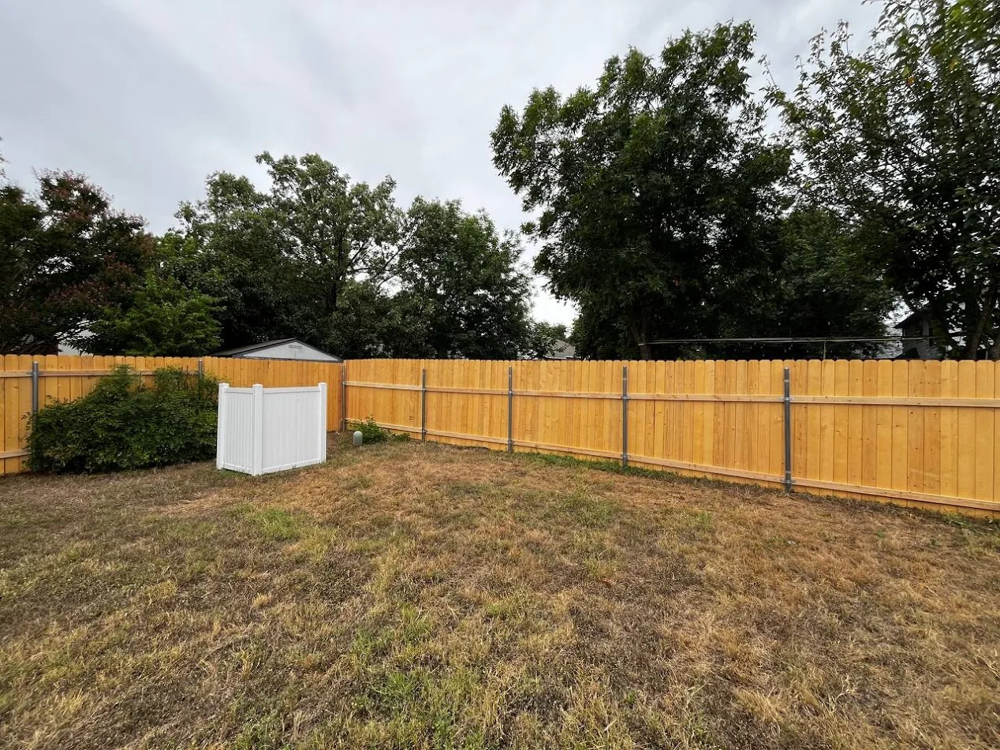
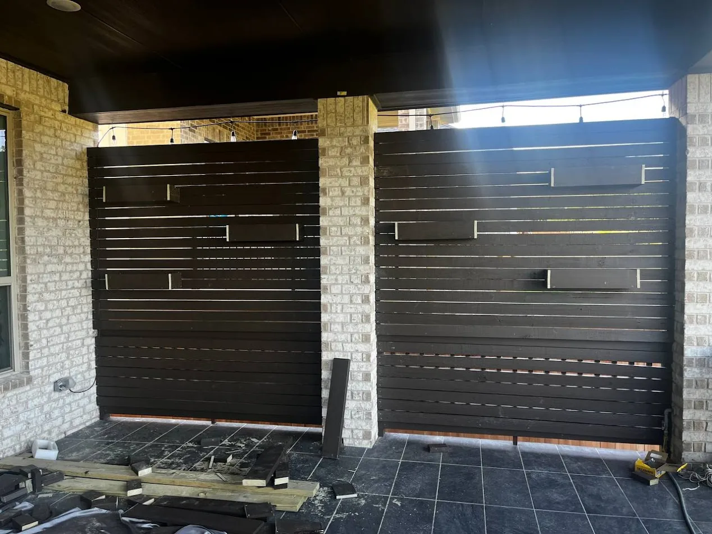
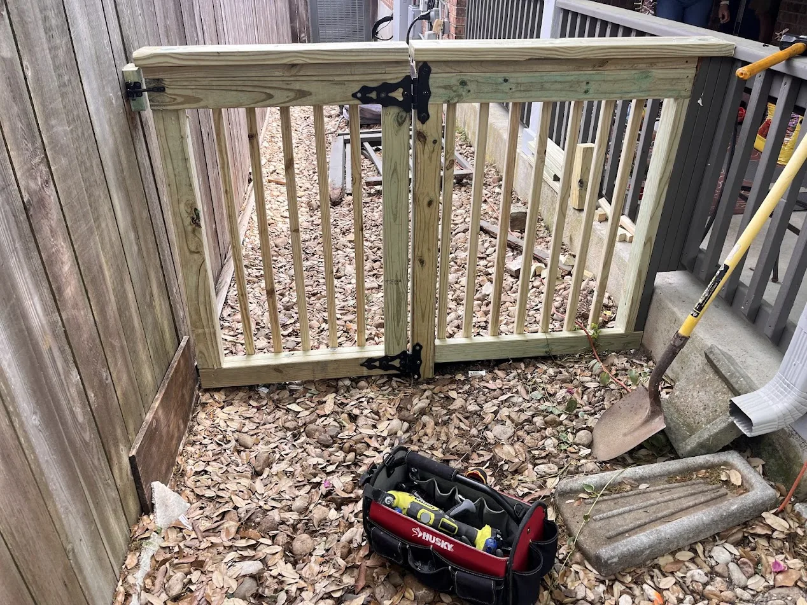

Cedar Park's Most Trusted
Fence Contractor
A wood fence is one of the most visible investments in your home. The difference between a fence that looks great for 15 years and one that leans after two is all in how it's built — depth of the posts, quality of the concrete, and the skill of the crew.
Gene has built hundreds of fences across Cedar Park, Leander, and Round Rock. Every post goes in at least 2 feet deep in concrete. Every job is cleaned up completely. And Gene is on every project — not just the estimate.
- Free on-site estimate within 24 hours
- Cedar, pine, or your choice of wood
- Posts set minimum 2 ft deep in concrete
- Old fence removal available (priced separately)
- 811 called before every dig — always
- Full cleanup always included
- 6-month warranty on all labor
- Payment after job is complete
Fence Services in Cedar Park, TX
Cedar Privacy Fence
The most popular choice in Cedar Park. Naturally rot-resistant, mid-range price, beautiful look. Boards installed vertically for full privacy.

Modern Horizontal Fence
Sleek horizontal board design for a contemporary look. Works great with dark stain or natural cedar. Popular in newer neighborhoods.

Custom Wood Gates
Single or double gates, walk gates, drive-through gates. Built to match your fence exactly. Heavy-duty hardware rated for Texas weather.
Fence Repair & Restoration
Leaning posts, broken boards, rotted rails, sagging gates — Gene fixes them all. Often cheaper than a full replacement.
Old Fence Removal
Full teardown and haul-away of your existing fence, including old concrete footings. Priced separately from the new installation.
Fence Staining & Sealing
Extend your fence life by years. Professional staining protects against UV and moisture — especially important in Texas heat.
How It Works
Simple process, no surprises, payment after completion.
Call or Text Gene
Reach Gene at (737) 400-1230 or fill out the contact form. Same-day response, 7 days a week, 8 AM–8 PM.
Free On-Site Estimate
Gene comes out within 24 hours, measures the property, and gives you a written quote. No pressure, no deposit.
We Build It
Materials deposit, then the crew gets to work. Most fences completed in 1–3 days. Gene on-site throughout.
You Pay After
Final payment only when you're satisfied with the finished fence. Full cleanup always included — we haul everything away.
Fence Pricing Guide
Every yard is different — these are typical ranges. Free written estimate always provided before any work begins.
Fence FAQ
Ready for a New Fence?
Free on-site estimate within 24 hours. Gene picks up the phone 7 days a week, 8 AM–8 PM.